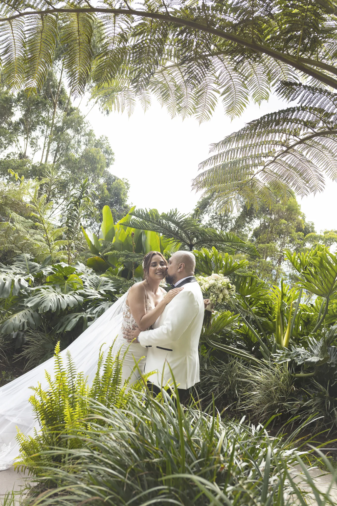
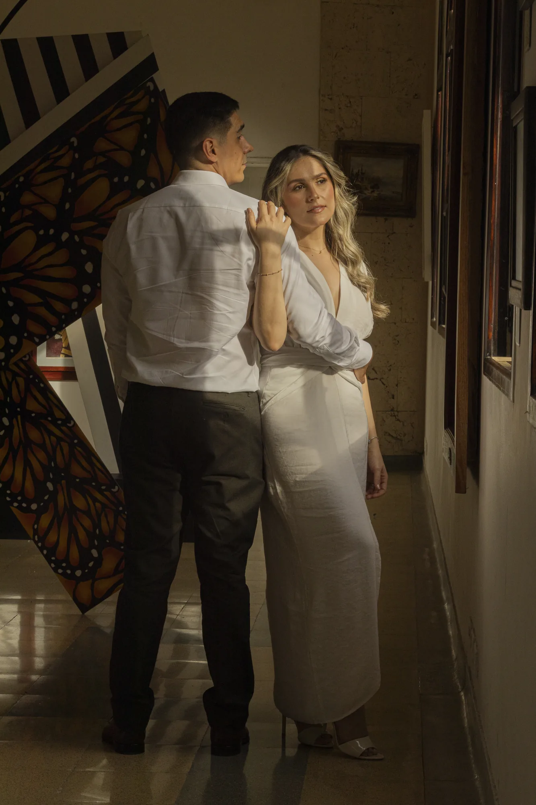
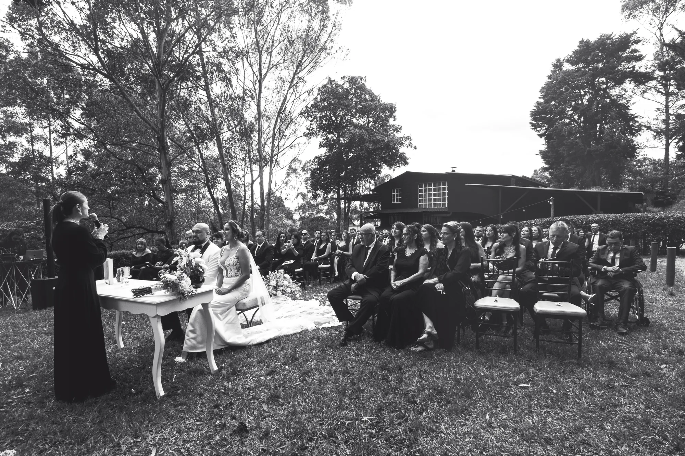
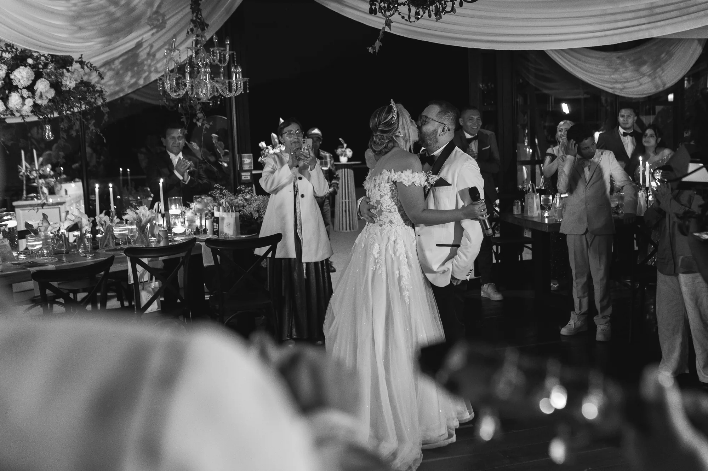

Boda
Carolina & David

Más de 480 historias capturadas con sensibilidad, mirada editorial y la certeza de que ningún instante vuelve a repetirse.
Crecí rodeado de cámaras, rollos fotográficos y fotografías que parecían detener el tiempo. Hoy mi oficio es exactamente ese: detener el tiempo para quienes me lo confían.— Esteban Jiménez
Lo que celebramos
Cinco momentos que vale la pena vivir despacio y guardar para siempre.
Lo que fotografío
Cada historia merece un lenguaje propio. Esta es la mirada con la que recorro Medellín, las montañas de Antioquia y el resto de Colombia.
El día más importante contado con verdad: la mirada que se cruza, la lágrima que se escapa, la promesa que ya no se borra.
Ver bodas →Quince años, maternidad, familia. Las etapas que merecen ser detenidas para siempre en una imagen.
Ver servicios →Un equipo creativo y técnico que cubre, edita y entrega. Fotografía, video cinematográfico y producción audiovisual de principio a fin.
Ver agencia →
Cuando la historia necesita aire. Tomas con drone que abren el paisaje y devuelven la escala emocional de cada celebración.
Ver fotografía aérea →
Marcas, productos y branding personal. Imágenes que venden sin perder el alma editorial de la marca.
Ver portafolio comercial →
Una vida mirando a través del lente
Soy Esteban Jiménez, fotógrafo de bodas y un enamorado de las historias reales. Crecí rodeado de cámaras gracias a mi padre, fotógrafo social, quien me enseñó desde muy pequeño a mirar el mundo con sensibilidad, emoción y atención a los detalles.
Aún conservo mi primera fotografía. La hice cuando tenía 7 años con una Pentax K1000 analógica: retraté a mis padres sin imaginar que años después dedicaría mi vida a capturar el día más importante en la historia de otras personas. Sin saberlo, fue la primera pareja que fotografié.
Hoy, después de 14 años en uno de los laboratorios fotográficos más importantes de Colombia y más de 480 bodas como testigo, sigo creyendo lo mismo: que estar presente en uno de los días más importantes de una pareja es algo que no se puede explicar con palabras.
Leer mi historia completa →Conoce nuestro equipo
Cinco personas, una misma sensibilidad: contar historias que duren para siempre.
Esteban Jiménez
Fundador · Director de Arte · Fotógrafo Principal
Lorena Méndez
Directora Creativa · Directora Comercial
Camilo Vega
Videógrafo · Narrativa Audiovisual
Anays Otero
Segunda Cámara · Iluminación
Jhon Gómez
Piloto de Dron · Operador Aéreo Certificado
En 10 días
Galería online privada entregada en máximo 10 días. Una selección editorial de cada historia, lista para revivir, descargar y compartir cuando quieras.




Tres películas
Cada video cuenta una boda desde adentro: con su ritmo, su silencio, su emoción. Mira algunos de nuestros trabajos.
Lo que dicen nuestras parejas
Lorena, Esteban y equipo, queríamos agradecerles de corazón por habernos acompañado en un día tan importante. Confiamos plenamente en su talento y en el amor que le ponen a lo que hacen.
Esteban, qué belleza de fotografías, se nota la dedicación y la entrega de parte de ustedes. Quedamos profundamente enamorados del trabajo que realizaron.
Infinitas gracias Esteban, de verdad que fue un trabajo hermoso, profesional e impecable, nos encantó todo, de principio a fin.
¿Listos para recordarlo para siempre?
Cuéntame de ustedes, de su fecha, del lugar que sueñan.
Escribir por WhatsApp → Solicitar cotización →